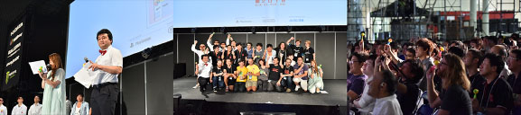

What's New
What is "SENSE OF WONDER NIGHT"?

SENSE OF WONDER NIGHT (SOWN) 2017 throws spotlights on game developers to draw wellspring of ideas which may stir the static concept of the game. In other words, SOWN 2017 will find out the game ideas causing "SENSE OF WONDER". To make such unique ideas widely known, SOWN 2017 would provide a presentation opportunity for game developers with unique ideas at TOKYO GAME SHOW 2017. SOWN 2017 commemorates the 10th anniversary with internationally increasing applications.
Total of 8 presenters had been selected presenters out of 69 Indie Game Area exhibitors. Nomination process was conducted through the screening committee consists of indie game experts, creators and publishers inside and outside of Japan. 8 presenters from 8 countries/regions were selected. Countries of nomination were as follows: each one from Japan, United States, Argentina, Canada, UK, Taiwan,Singapore and France. 370 people attended SOWN 2016, where the venue was packed with excitement and international atmosphere applauding each presentation by shaking toy hammers! "Audience Award" "Best Technological Game Award" "Best Arts Award" "Best Experimental Game Award" "Best Game Design Award" "Best Presentation Award"trophies were given in the end and all of eight developers enjoyed networking at International party + Indie Night with attendees and screening committee members.
Objectives of "SENSE OF WONDER NIGHT"
To introduce game with a game design and ideas that are experimental and creative, and that cannot be called conventional or traditional
To raise awareness of the great value of "sense of wonder" in games, which may transform the common sense of game, and lead to invigorate the game industry
To offer people creating experimental games opportunities for the future product release
To create new domains in the game industy
Why don't you show your idea to the Tokyo Game Show audiences who come from everywhere in the world? And we would like you to be inspired by other presenters and audiences and find new experience and network at SOWN 2016.